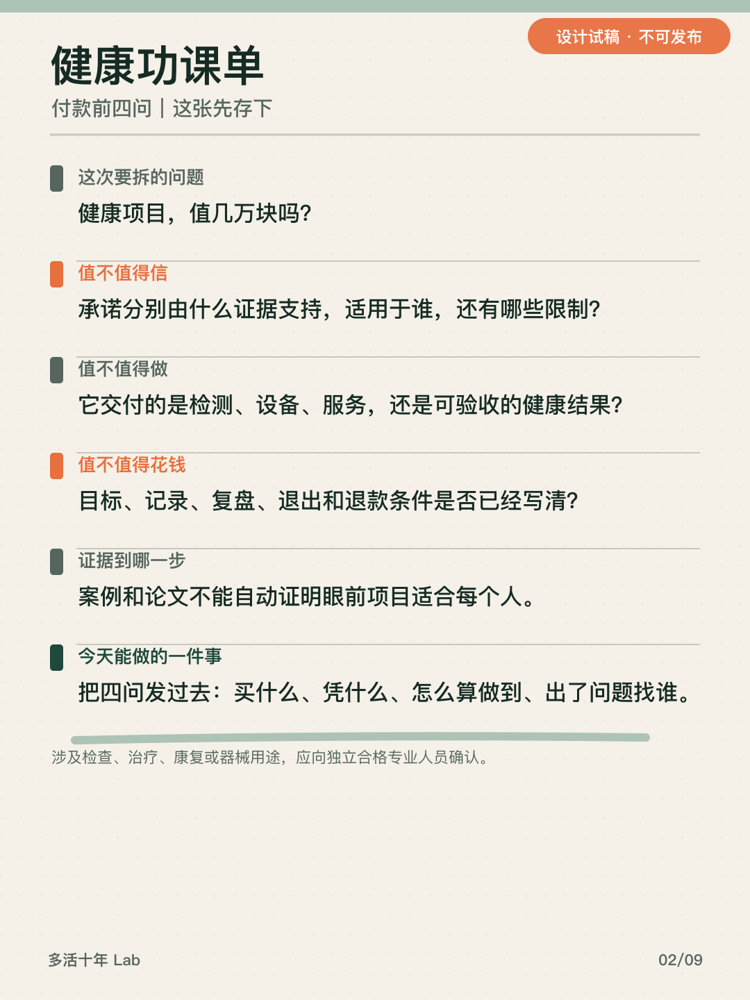
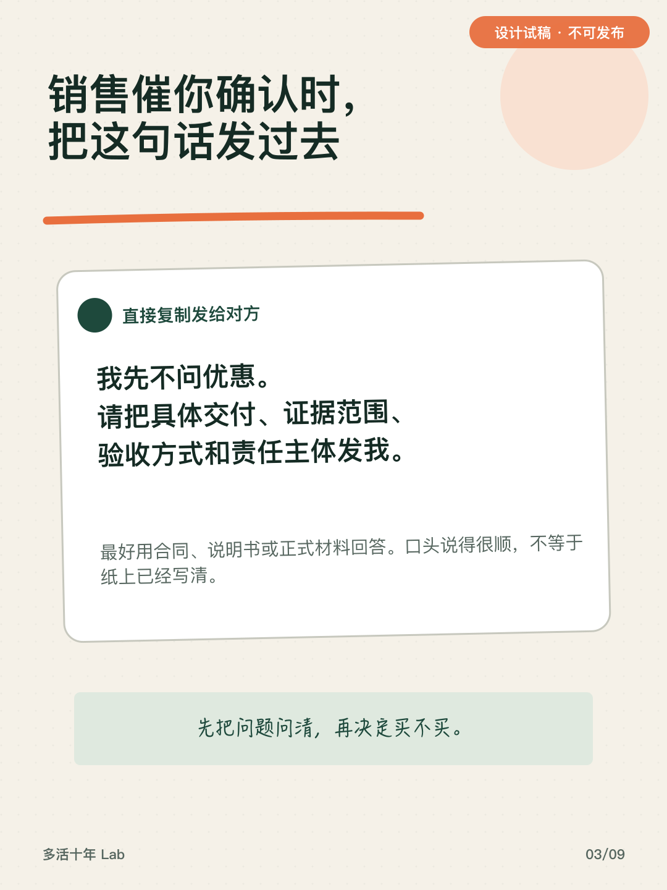
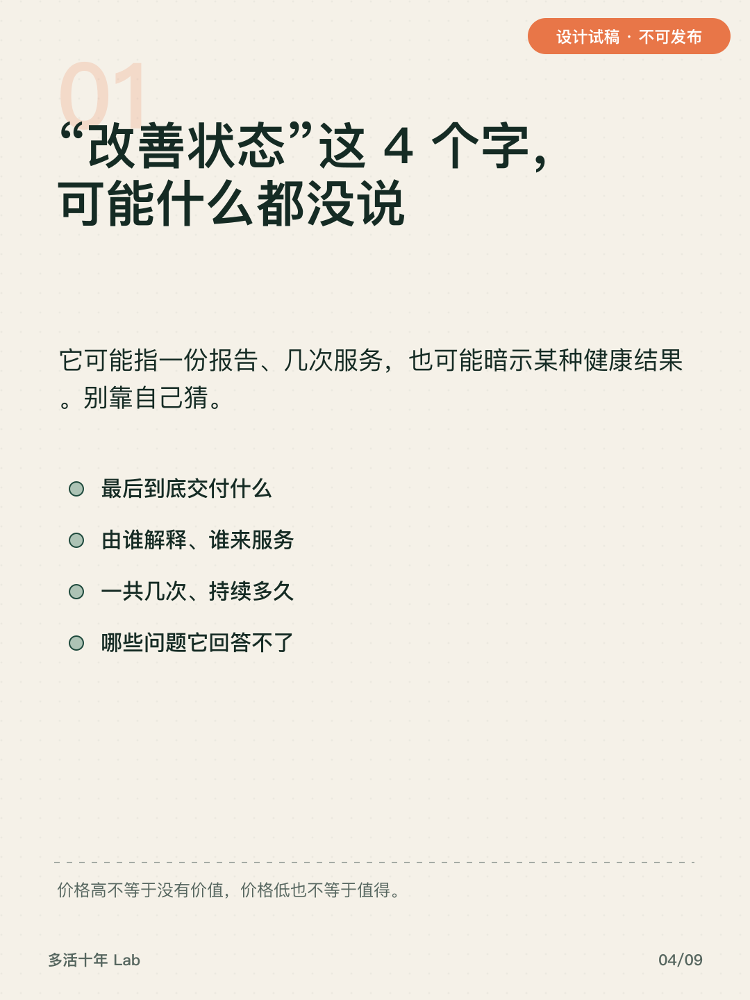
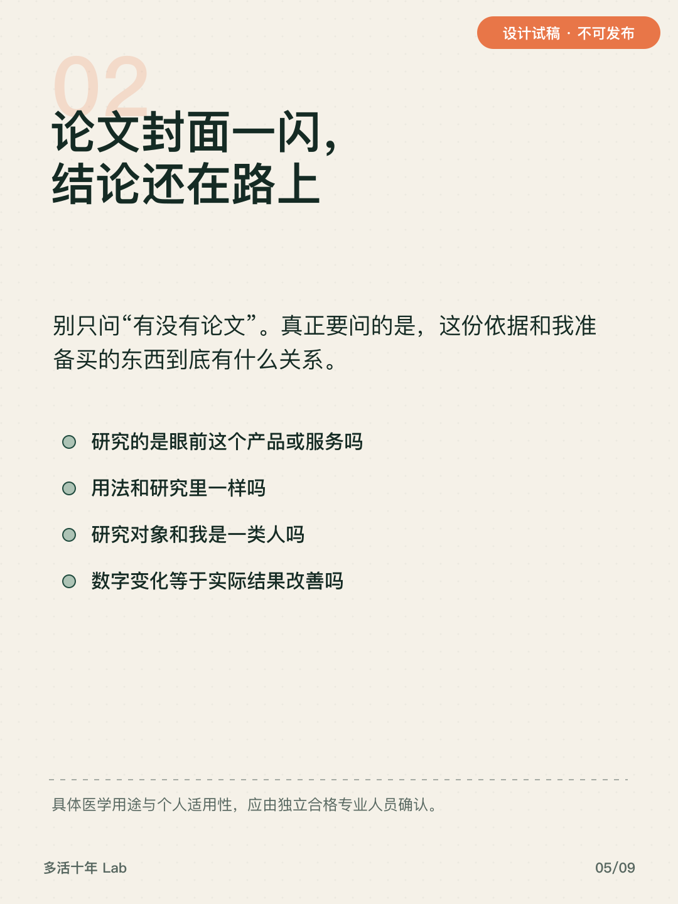
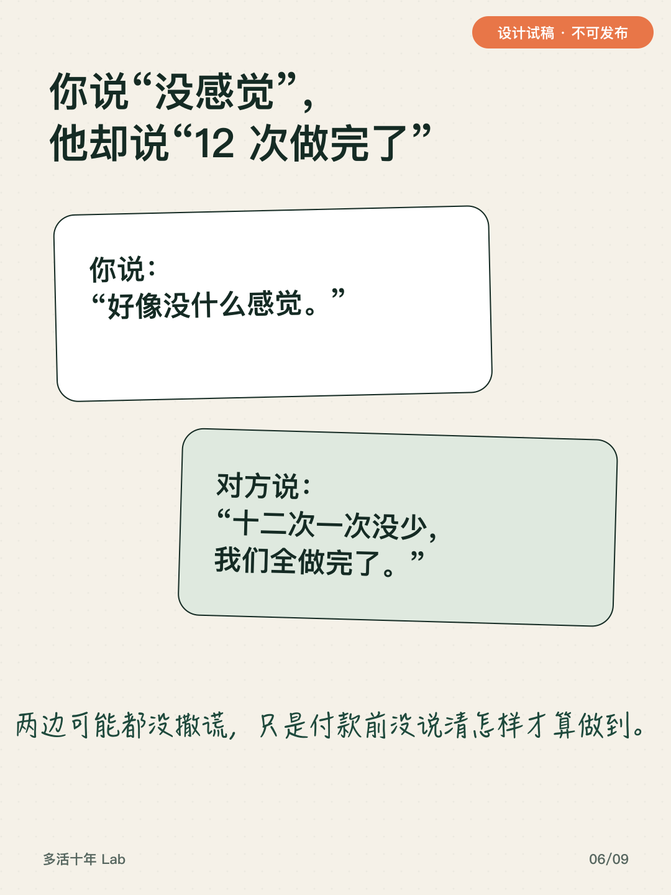
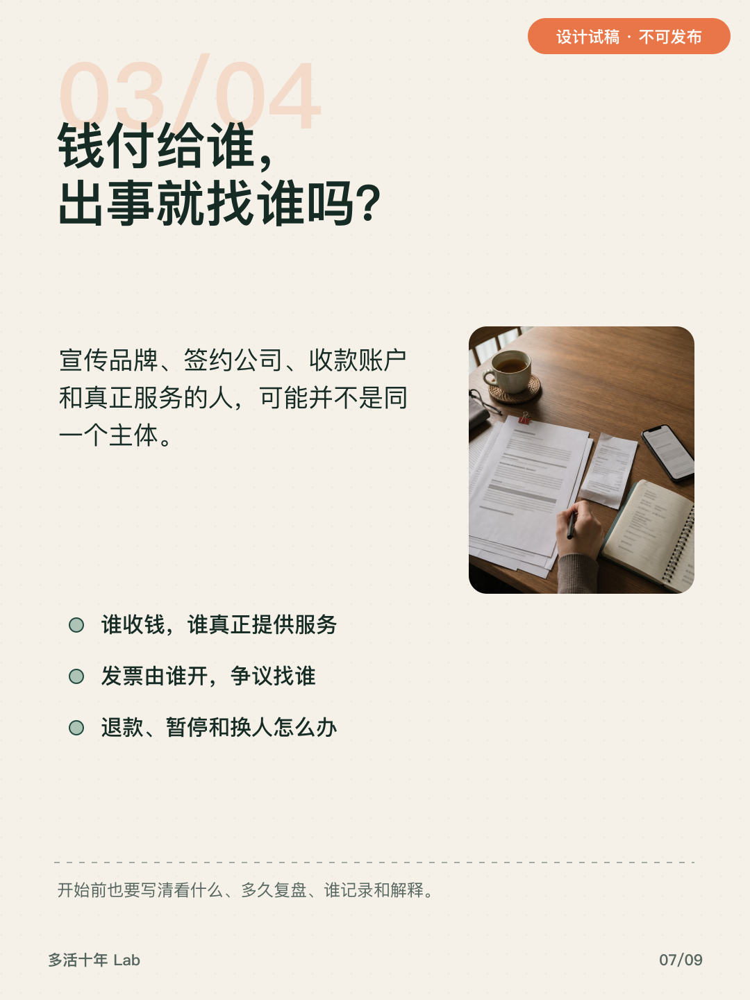
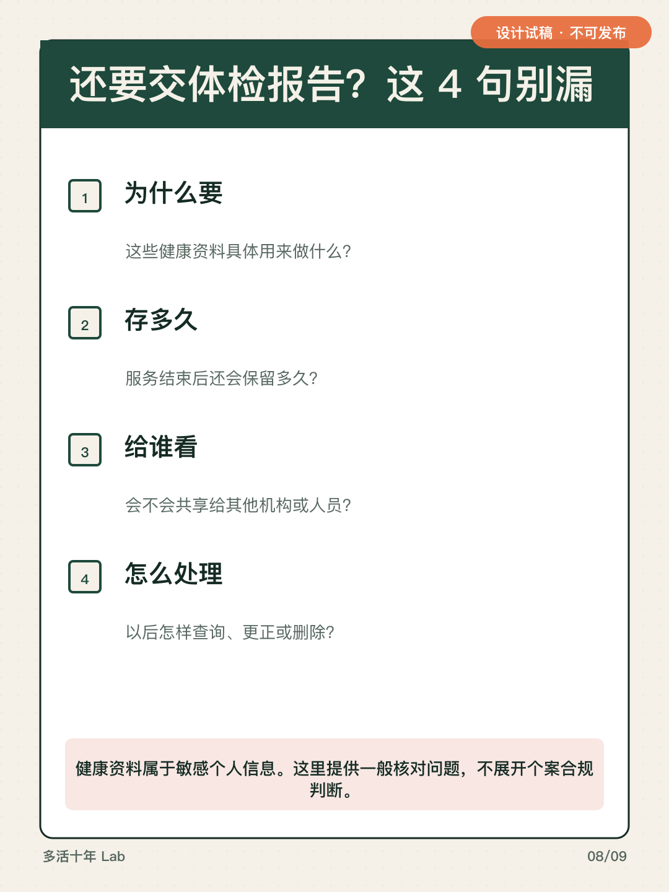
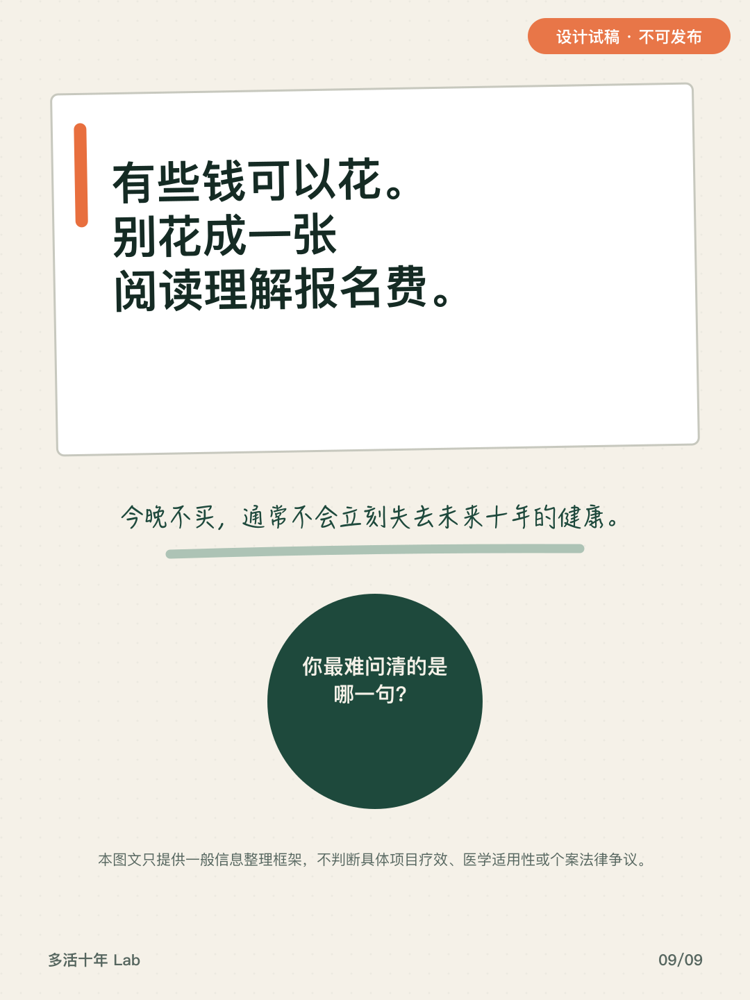

小红书发帖面板
审核用发帖包，当前不可发布 · DesignTrial / NotReleaseReady
一键复制
标题
准备花几万元买健康项目？付款前先问这4件事
正文＋互动＋标签
晚上十点，销售还在等你确认。优惠、名额、案例一起往前推，人很容易先问：还能不能便宜一点？ 这时候更该先问的是：这几万元，我到底买到了什么？ 我把付款前需要核对的信息整理成了四句： 1. 买什么：具体交付什么，谁来做，哪些问题回答不了？ 2. 凭什么：依据真正支持什么，和眼前这个项目有什么关系？ 3. 怎么算做到：开始前看什么，多久复盘，由谁记录和解释？ 4. 出事找谁：谁收钱、谁服务、发票谁开，退款或暂停怎么办？ 如果还要提交体检报告、病历或影像，再问清用途、保存时间、共享对象，以及怎样查询、更正或删除。 这四句不能替你判断具体项目有没有疗效，也不能判断它是否适合个人。涉及检查、治疗、康复或医疗器械用途，应找独立、具备相应资质的专业人员确认。 今晚不急着付。请对方用合同、说明书或正式材料回答。说清楚不等于一定该买，一项答不上来也不等于当场违法。 有些钱可以花。别花成一张阅读理解报名费。 这四句里，你最难问清的是哪一句？ #健康消费 #理性消费 #健康管理 #消费者权益 #个人信息保护
图片上传顺序







